Getting children to look up while they walk
JoanX is a walking-safety game for children and a calm weekly dashboard for their parents. It answers phone-use-while-walking with one buzz instead of a locked screen.
- Role
- Product design and front-end build
- Scope
- Child app and parent app
- Timeline
- 16 weeks · Jun–Sep 2026
- Type
- Client project · prototype
Confirm: your exact role and the team around you. "Product design and front-end build" comes from the project documentation.
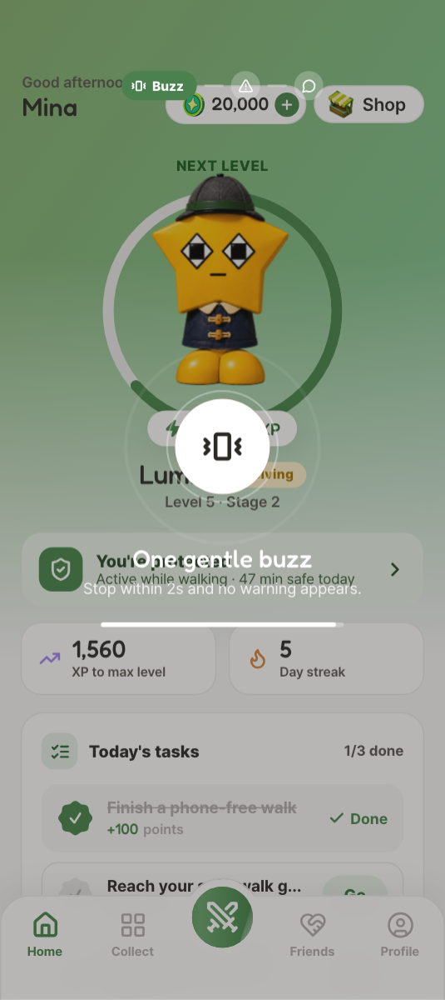
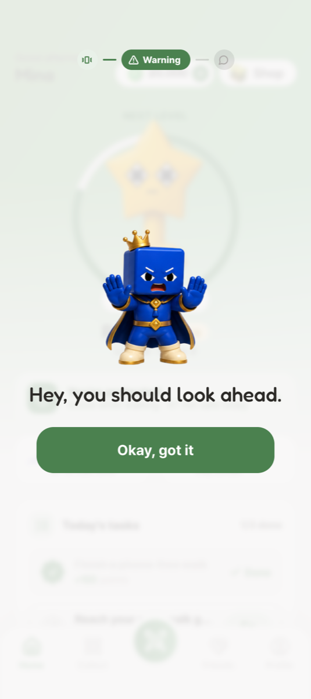
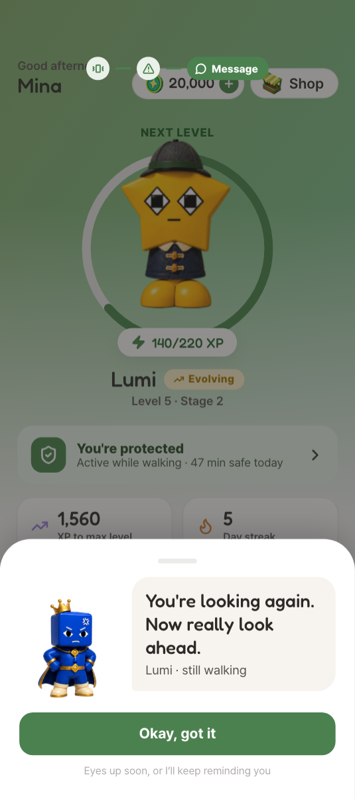
Two people, two very different moments
- Walks to school with the phone in hand
- Glances at notifications, videos, feeds
- Needs to keep the phone, and not feel watched
- Isn't there during the walk
- Decides whether to talk about phone habits
- Needs to know if it's getting better, without spying
- Co-parents, grandparents, the school run
- Join a guardian group by QR or code
- Need one shared picture, no duplicate alarms
Add if you have it: the target age range and who the client is. The spec doesn't state an age.
How might we get a child to look up while walking, when every tool that forces it gets switched off?
These are design risks, not observed pain points. They come from the product brief and spec. Replace them with what you saw, if you researched with parents or children.
What it had to do
- Child: stop quickly, without losing the phone
- Child: get something they care about for stopping
- Parent: see whether it's working, in one look
- Parent: hear about real problems only
- Product: stay installed
What it couldn't do
- Never block the screen. The strongest action is a firmer message.
- Calls and texts always stay open (spec F-27).
- No location: GPS features were cut in the 18 Jun spec revision.
- Motion sensors only: walking is confirmed from about 8 s of step cadence.
- Android first (foreground service).
- A 43-row functional spec, in English and Korean.
What shaped the decisions
Warnings must escalate in stages and never force a block.
Story 1: the staged safety moment
Every requirement needed a visible, testable state.
Each spec ID traced to a screen in the spec checklist
About 30 claims on the first landing page didn't match the product.
Every public claim is checked against the build
Add your research if you did any: interviews, competitor review, observation. Keep 2–4 findings, each linked to a decision.
Nudge, never force
Escalate the tone, never the power. The best outcome has no screen at all.
Reward the right moment
Pay for stopping, not for dismissing. Stopping early pays the most.
Change, not surveillance
Parents see whether it's improving, never where the child is.
Same truth for both
What the parent can see is a short, fixed list, and the child can be shown it.
The safety moment
- Challenge
- A warning has seconds to work. Too soft and it's ignored; too hard and the app is uninstalled. And it can't block anything.
- Exploration
- Seven warning layouts and two narrators, compared side by side.
SpotlightCardFrameSignalStripSheetBannerKing Cubix narratesThe child's buddy narrates
- Decision
- 10 s of grace → one buzz → a one-line card → a firmer message, only if they keep going. A separate mascot, King Cubix, delivers it, so the child's own buddy never scolds.
- UX
- Look up within 2 seconds of the buzz and no warning appears at all, and that path pays the most points. Stopping is the fastest way through.
- UI
- One line and one button per step
- "Okay, got it", with the check icon dropped so it doesn't read as a reward
- A gentle → firm → urgent tone ladder
- "Recorded in your report" from the second reminder
A game only safe walking can pay for
- Challenge
- The reward has to matter to a child, but a game aimed at children easily becomes a gacha that pressures them to spend.
- Exploration
- Several character lines, 20 collection layouts, 10 dex layouts, and several battle presentations before the painted arena.
ComicKorean3D3D CuteClient line
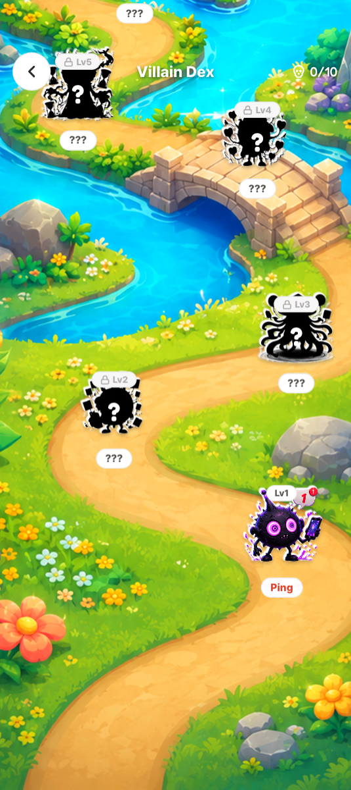
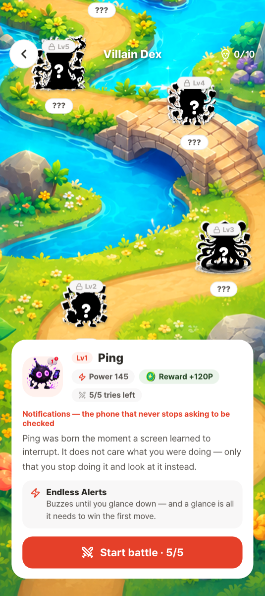
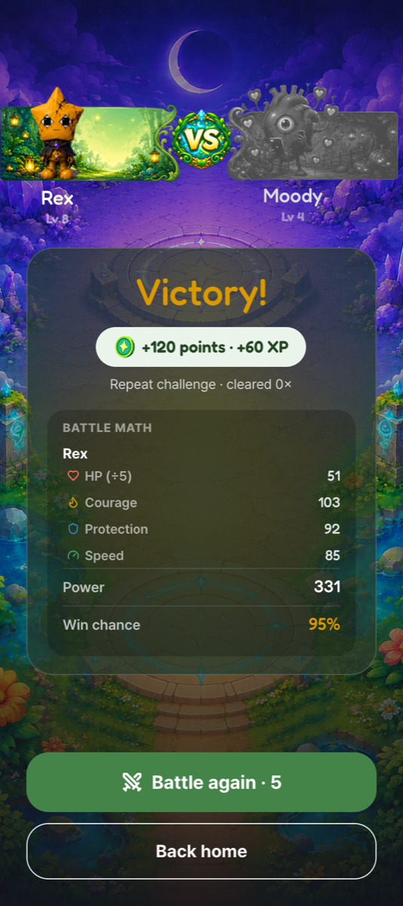
- The habit it stands for, its move, and the reward
- Points and XP, with the battle maths shown
- Decision
- One currency, earned by walking: 10 points a phone-down minute, 50 for stopping before a warning
- Villains are real habits (Ping is notifications, Chrono is lost time), unlocked one win at a time
- Epic buddies can't be bought: they come from a 30-day streak, level 10 or the final villain
- UX
- Every reward traces back to walking safely, so the game reinforces the behaviour. Battles close themselves when the child starts walking.
- UI
- Win chance and both power totals shown before a battle
- Battle maths on the result screen
- Gold reserved for points and XP only
A weekly report, not a live feed
- Challenge
- Parents want to know it's working, but a stream of events and a map would erode the child's trust, and the whole approach depends on it.
- Exploration
- The key numbers were redesigned several times in July and August: two-card KPIs, streak swapped for an "Ignored" card, a ratio "stopped" KPI that was reverted to a plain count.
CardsRing + stats
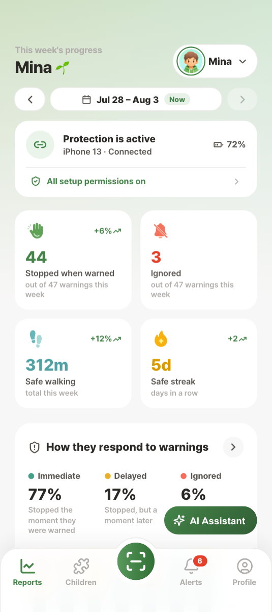
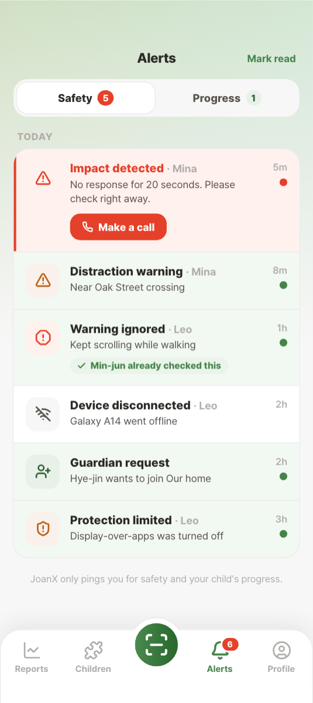
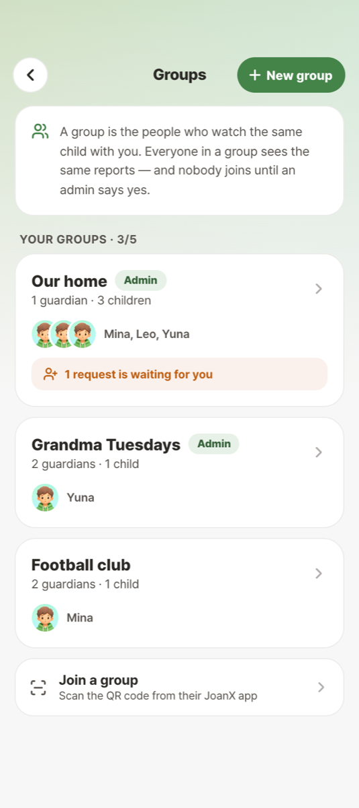
- Four numbers, each against last week
- Urgent first; "already checked" for shared guardians
- Decision
- Four numbers against last week: stopped, ignored, safe minutes, streak
- An AI summary that opens with the verdict, then the week, then one thing to try
- Alerts only for real events: a possible fall, a device offline, protection off
- UX
- The first thing a parent reads answers "is it getting better?". Two guardians never chase the same alert.
- UI
- Verdict-first hierarchy
- "Warning acceptance" renamed "Stopped when warned"
- Urgent alerts in red, with a call button
- Offline and permission states shown, not hidden
- PairThe parent shows a 6-digit code; the child types it in
- ConsentMotion, usage, overlay and notifications
- WalkDetection only while walking and on the phone
- NudgeBuzz, card, message
- PlayPoints grow the buddy, unlock villains
- ReportThe parent reads the week
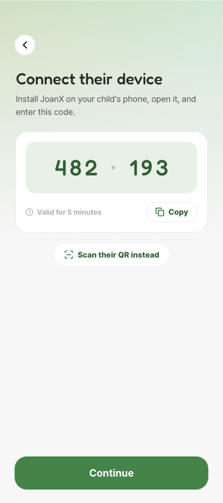
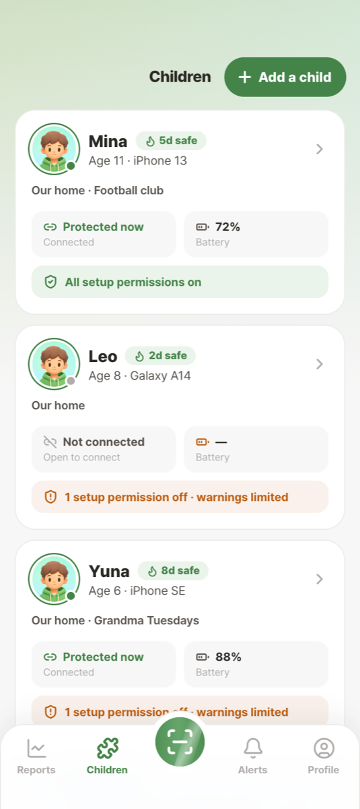
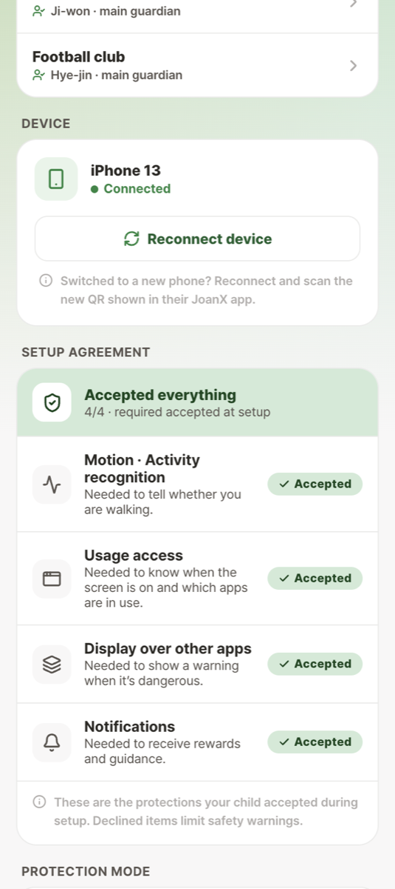
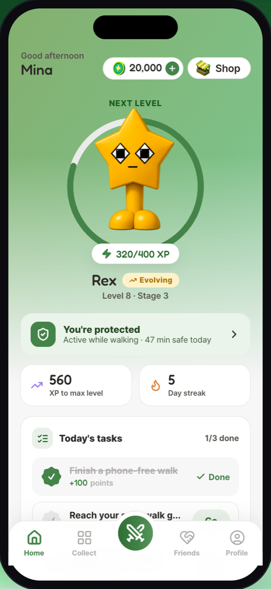
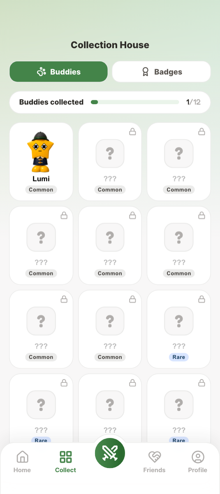
Checked against the spec and the product
- Every in-scope spec requirement traced to a screen
- The website audited claim by claim: expected it accurate → found about 30 mismatches → rewrote the copy to match
The buzz-to-stop moment
Child task: "Walk to the corner while watching a video." Do they stop before the card appears? Do they read it, or tap it away?
Parent task: "Is your child walking more safely this week?" Can they answer from the report alone?
No user testing appears in the repo. If you ran sessions, replace the right card with: expected X → observed Y → changed Z.
Delivered
- A clickable prototype of both apps
- A design system
- Play Store assets
- A landing page checked against the product
Not launched yet
A pre-release prototype with sample data, so there are no usage metrics to report.
Reflection
- Hardest: a reward strong enough to matter, in a game that mustn't compete with the road
- Learned: copy is design; most site problems were promises the product didn't keep
- Next: test the buzz-to-stop moment with children
Reflection is a draft. Rewrite it in your own words.
On JoanX I designed for trust first: a product that changes a child's behaviour by rewarding it, and tells parents what's improving without watching the child.
← → to move · N for notes · Home / End to jump